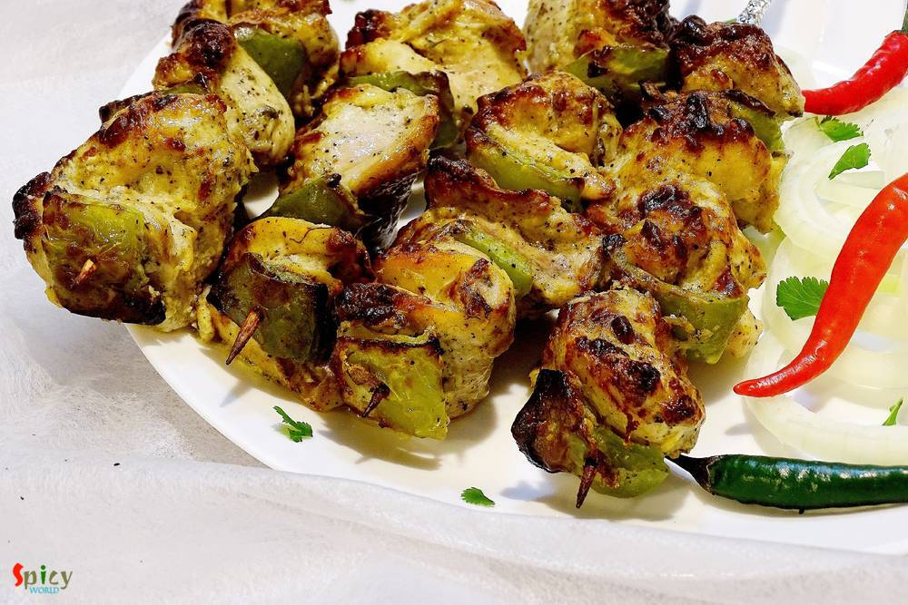

Simple and Easy Recipes
 Curry")
Nonveg Recipe
May 2, 2016
There are some recipes which are classics. They don't need any upgradation. 'Kolhapuri Egg Curry' is from this category. This is a famous Maharashtrian dish in which boiled eggs are cooked into the 'kolhapuri' gravy ... it tastes million bucks ! This curry is rich + hot in taste and goes perfectly with steamed rice or plain chapatis. You can keep a large batch of this Kolhapuri masala in fridge fo ...

Apr 29, 2016
Mango is all over the market nowadays. Everybody loves juiciness and sweetness of mango during summer. You can make so many desserts with mango. One of my favourite among them is 'maongo mousse'. Mousse has very light and fluffy texture that's why I love to eat it. Sometimes, to me, after having heavy meals rich dessert becomes overpowering, in those case 'mousse' is very good option. I made my mo ...

Nonveg Recipe
Apr 26, 2016
Don't know about you, but I love 'keema' / mince form of meat. I have already posted so many recipes on 'keema' and this time I made paratha with mince chicken. The authentic recipe calls for 'mutton keema' but didn't have it that time, so made it with chicken and the parathas came out perfectly fine. These breads can be enjoyed with pickle, raita or any type of gravy. The recipe is very simple bu ...

Veg Recipe
Apr 25, 2016
I love to keep 'yogurt' in my fridge all through the year. Because it has so many roles in cooking. You can eat plain yogurt, make gravy / cake / dessert / drink and also it helps to marinate protien. I can never imagine a day without yogurt in my fridge. Summer is almost here and I have already started to make different types of drinks and smoothies. Among them, one of my favourite is 'chaas'. Th ...

Nonveg Recipe
Apr 22, 2016
Are you a garlic loving person ? I am. As chicken is my favourite protien, so I had to combine these two in one dish. 'Lehsuni Murgh' is the perfect dinner choice I made last of last weekend. The dish has very minimum spices with beautiful roasted garlic flavour. This curry can be served with naan, roti or paratha. Recipe is very simple but it tastes heavenly.
 / চিকেন কাটলেট")
Nonveg Recipe
Apr 20, 2016
'Chop - Cutlet' shops are very much available in Kolkata. You will surely find one or two shop in every street. You know how much I love fried stuff, but this one sits on top of my favourite list. 'Cutlet' means breadcrumb coated fried flat croquette. Generally in India we eat this type of fast food from street shop. After my marriage my mom twice made these chicken cutlets at home. They were scru ...

Nonveg Recipe
Apr 18, 2016
The name sounds odd ? Well, I am not crazy, we call this mutton curry vegetarian because it has no onion and garlic. The food we usually offer to our god / godess is called 'bhog' which never contains onion and garlic. During 'kalipuja' or diwali, we Bengalis make this vegetarian mutton curry with the meat of 'pathaboli' (ritual). The taste of this curry is suprisingly delicious, even if there is ...

Nonveg Recipe
Apr 15, 2016
What can I say about this one? Because again its Kabab!! This malai kabab has very smooth texture and smokey flavour. 'Malai' means cream, usually chicken cubes are marinated with yogurt, cheese, cream and some spices, I also did the same. You will be lost whenever you put that juicy, tendor piece of chicken in your mouth. I am damn sure that these kababs will make your appetite satisfy. Enjoy the ...

Veg Recipe
Apr 13, 2016
This is a very typical Bengali veg dish which you can only enjoy with steamed rice. We, bongs, have a very strong connection with 'posto' / poppy seeds and 'shorshe' or mustard seeds. We can creat so many delicious items with these two simple things. Now, 'he' is not a fan of eggplant, except fried version, to feed him this particular vegetable is really painful. I always have to make special dish ...

Nonveg Recipe
Apr 12, 2016
I always find immense pleasure in cooking deep fried dishes, I know they are not always healthy to eat, but then, who is watching ? I made this 'fish pokora' last month and simply forgot to post. It is close to 'amritsari fish fry' but I didn't use lots of spices, that's why they are just 'fish pakora'. You can enjoy this with chilli sauce / chutney / coke / beer. Everytime they will taste scrumpt ...